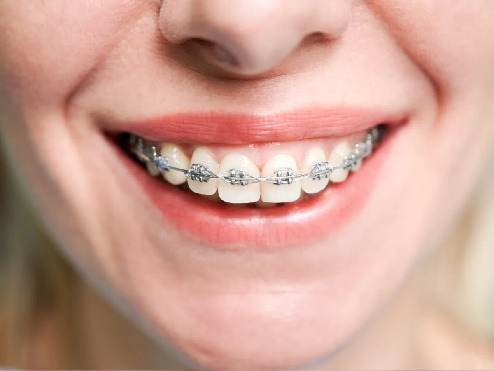
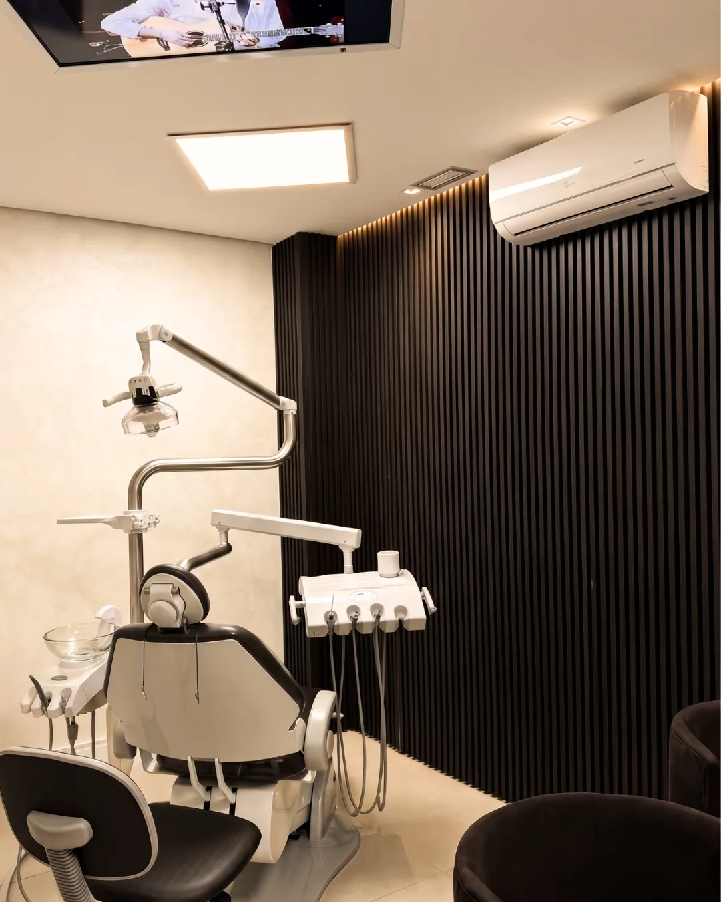
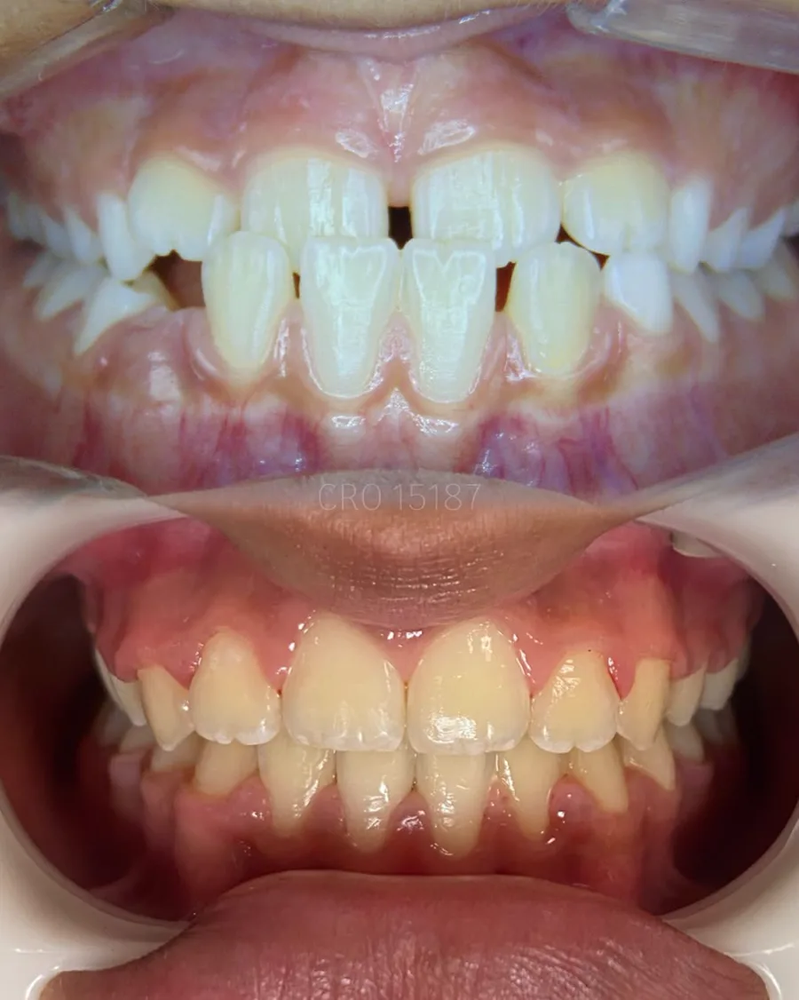
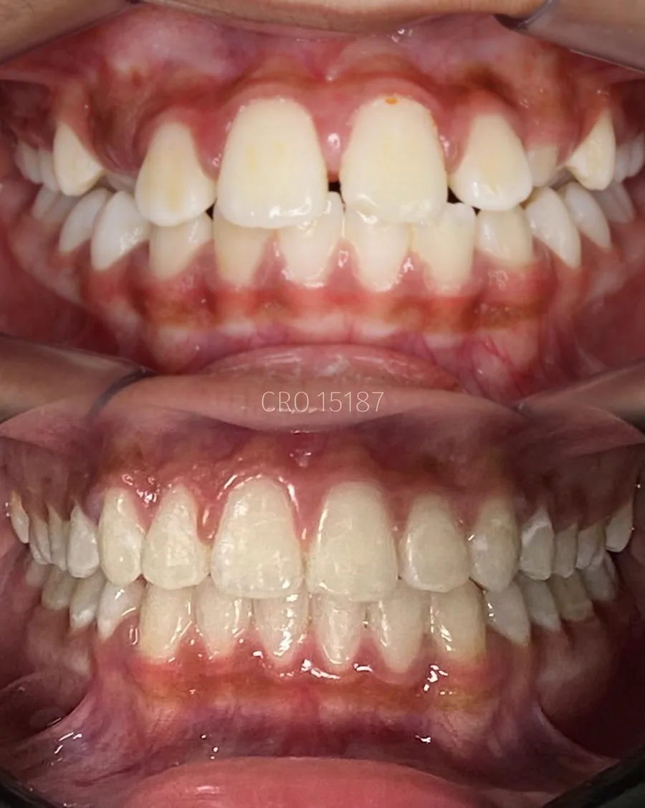
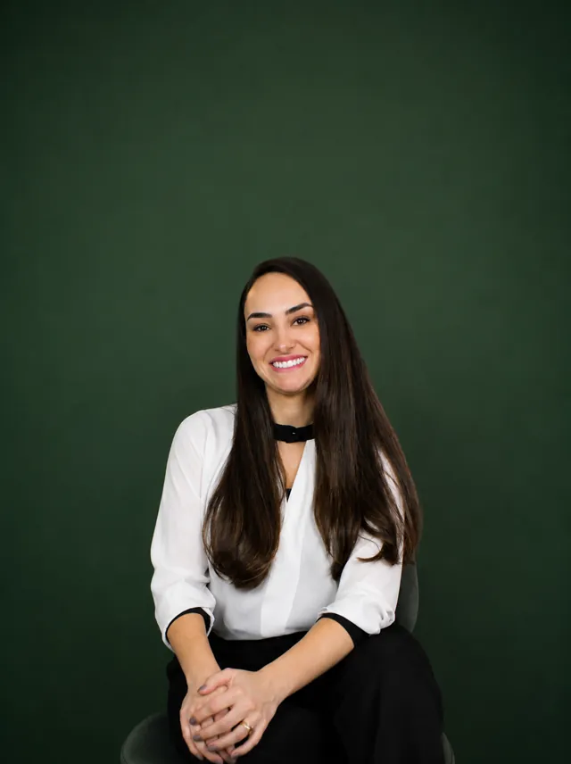
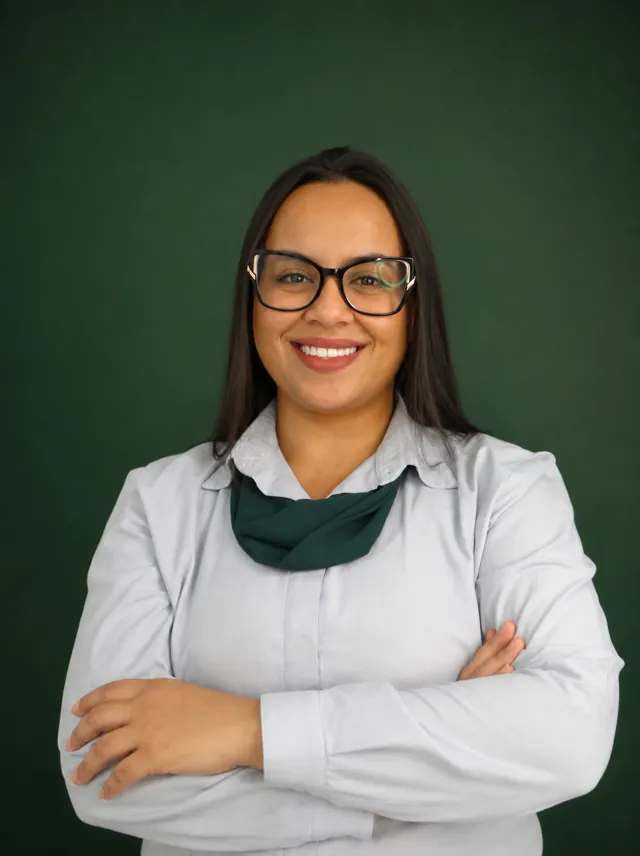
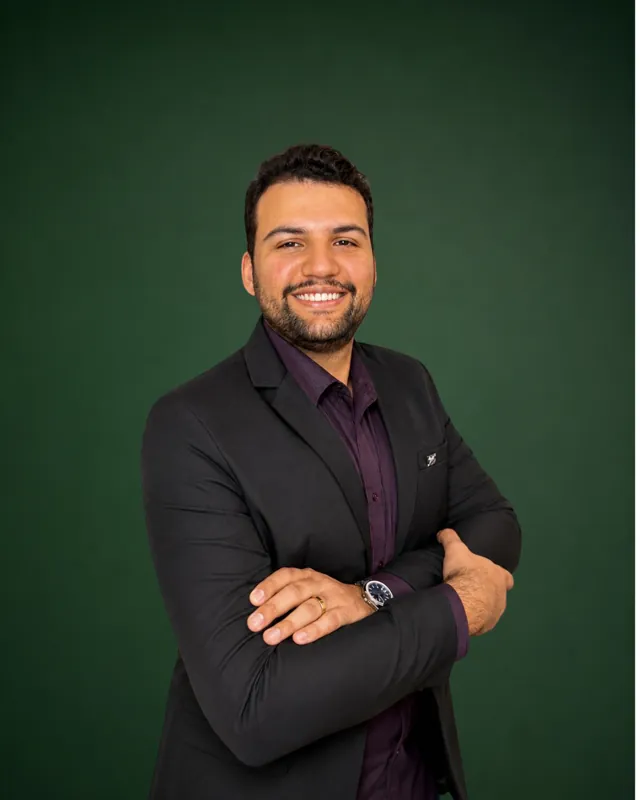

Aparelho fixo
Opção tradicional para diferentes movimentações dentárias, com ajustes e acompanhamento periódico.
Avaliação ortodôntica para entender sua necessidade e comparar as possibilidades de tratamento — dos aparelhos convencionais aos alinhadores.

A escolha considera objetivos, complexidade do caso, rotina e indicação clínica. A avaliação ajuda a comparar benefícios e limitações.
Opção tradicional para diferentes movimentações dentárias, com ajustes e acompanhamento periódico.
Alternativa fixa com componentes mais discretos, quando indicada para o planejamento do paciente.
Placas removíveis e transparentes, planejadas em sequência para casos compatíveis com essa modalidade.

O planejamento ortodôntico considera a mordida, a posição dentária, a saúde bucal e o objetivo que trouxe você à consulta.
Os casos abaixo são exemplos de tratamentos ortodônticos realizados e já divulgados pelo Ateliê. Cada paciente responde de forma individual.


As imagens não representam promessa de resultado. Duração, movimentações e resultado dependem do diagnóstico e da resposta individual.
Conheça a equipe que participa da experiência no Ateliê do Sorriso. O profissional responsável pelo tratamento é definido conforme a avaliação clínica.

Diretora Clínica
CRO-SP 110.378. Especialista com visão em Ortodontia, Odontopediatria, Cirurgia e HOF.
Avaliação e Planejamento
Seu primeiro contato. Sempre pronta para ouvir e desenhar o planejamento perfeito em Dentística.
Responsável Técnico
Parceiro do laboratório Studio SR, essencial para viabilizar os protocolos de Carga Imediata em 3D.

Recepção e Estética
Veterana da casa. O rosto acolhedor que garante uma experiência incrível desde a porta de entrada.

Avaliação e Planejamento
Profissional dedicado que acompanha os pacientes com atenção e cuidado em cada etapa do tratamento.


As etapas podem variar, mas o tratamento começa sempre por um diagnóstico responsável.
Você conta o que deseja melhorar e tira as primeiras dúvidas.
A avaliação e a documentação indicada mostram as necessidades do caso.
A equipe explica as opções compatíveis, o plano e o orçamento.
Consultas periódicas permitem conduzir e monitorar o tratamento.
Depoimentos autorizados já publicados na página institucional. Experiências individuais não garantem o mesmo resultado a outros pacientes.
“Faço tratamento ortodôntico na clínica e posso dizer que foi a melhor decisão que tomei. A equipe é extremamente capacitada, solícita e oferece um atendimento humanizado.”Jailma Rocha · trecho da avaliação
“Meu filho está fazendo tratamento ortodôntico na clínica e estamos muito satisfeitos com todo o acompanhamento. A Doutora Carla é extremamente atenciosa com o paciente, explica cada etapa do tratamento com muita clareza e sempre demonstra cuidado e carinho durante as consultas.”Tatiana Monteiro · trecho da avaliação
“Um espaço odontológico super aconchegante e acolhedor. Tratei meus dentes com eles e finalizei meu tratamento do aparelho. Hoje, graças a Dra. Bruna, Dr. Amarildo e Dr. Mateus, tenho um sorriso lindo que todos elogiam.”Laisa Meneses · trecho da avaliação
Praça Padroeira do Brasil, 145 · Centro · Osasco/SP. Estacionamento próprio e fácil acesso no centro da cidade.
Consultar horáriosA modalidade e o prazo só podem ser definidos depois de avaliar as características do caso.
Nem todos os casos têm a mesma indicação. A avaliação mostra se alinhadores são adequados e quais alternativas devem ser comparadas.
O prazo depende das movimentações necessárias, da resposta individual e da colaboração com os cuidados recomendados.
O investimento varia conforme a modalidade, a complexidade e o acompanhamento previsto. O orçamento é apresentado após o diagnóstico.
A equipe precisa avaliar o tratamento em andamento, a documentação e as condições bucais antes de orientar uma transição.
Agende uma avaliação ortodôntica no Ateliê do Sorriso, em Osasco.
Agendar pelo WhatsAppResultados, modalidade, duração e valores variam conforme a condição clínica e a colaboração de cada paciente. Nenhum resultado é garantido.